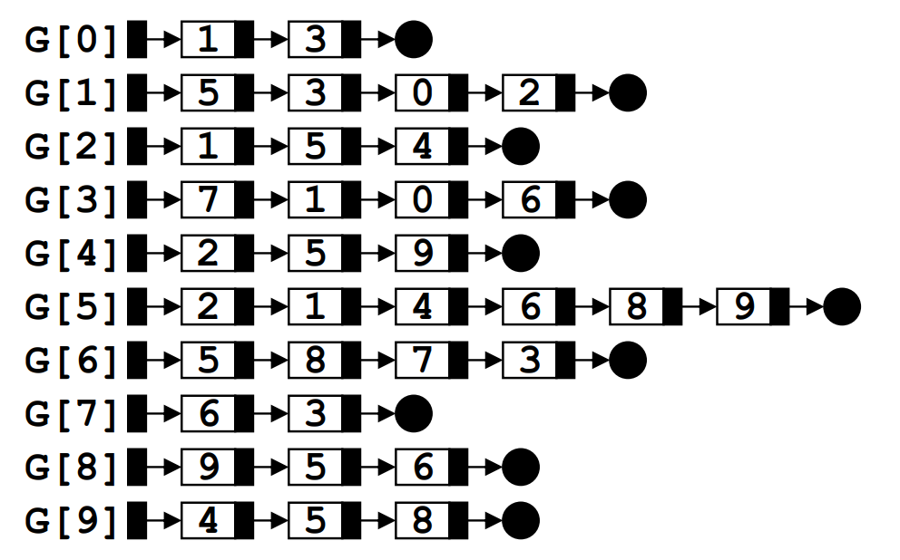
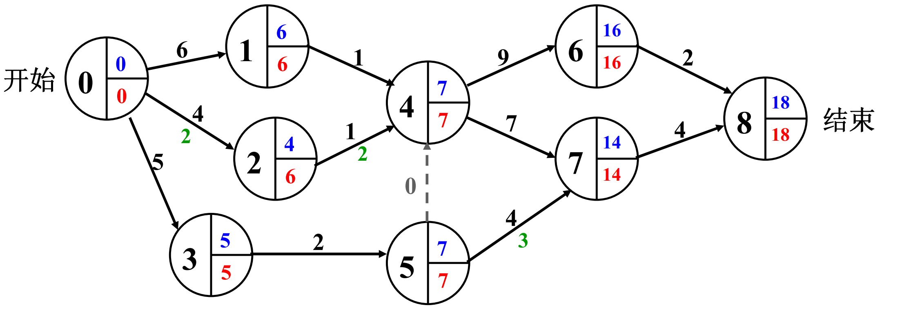

图（上）
在本博客中涉及的图，如果没有特殊说明，都是没有重边和环边的简单图。
图的抽象数据类型定义
类型名称：图（Graph）
数据对象集：G(V,E) 由一个非空的有限顶点集合 V 和一个有限边集合 E 组成。
操作集：
void insertVertex(Vertex v)//将 v 插入图
void insertEdge(edge e)//将 e 插入图
void dfs(Vertex v)//从 v 出发深度优先遍历图
void bfs(Vertex v)//从 v 出发广度优先遍历图
void shortestPath(Vertex v,int dist[])//计算图中顶点 v 到任意其他顶点的最短距离
TreeNode* mst()//计算图的最小生成树,并返回树根怎样在程序中表示一个图
邻接矩阵
表示方式
即将图信息存在一个二维数组中，其中对于无权图，定义如下的邻接矩阵 G[N][N]：
if 边<vi,vj> in E(G):
G[i][j]=1
else:
G[i][j]=0对于有权图，只要把 G[i][j] 的值由 1 修改为权值即可。
注：对于无向图，显然使用邻接矩阵会多浪费一倍的空间，因为 G[i][j] 和 G[j][i] 表示的信息是一样的。此时如果空间比较紧张，可以用一个长度为 N(N+1)/2 的一维数组存储 {$G_{00},G_{10},G_{11},…,G_{n-1n-1}$}，其中 $G_{ij}$ 在数组中对应的下标是 $i*(i+1)/2+j$。
使用邻接矩阵的优缺点
优点：
-
直观、简单、好理解。
-
方便检查任意一对顶点间是否存在边。
-
方便找任一顶点的所有邻接点（复杂度为 $O(|V|)$）（显然会严格的查找该顶点所在行/列后才能得到），而邻接表复杂度为 $O(deg(v))$。
-
方便计算任一顶点的度（出度和入度都可）。
缺点：
- 浪费空间：使用的空间为 $O(|V|^2)$ 存储稀疏图时有大量无效元素（即有很多 0），但存储稠密图时非常合算。
- 浪费时间：统计稀疏图中的边数需要 $O(|V|^2)$ 的时间，而邻接表只要 $O(|E|)$ 的时间，对于稀疏图，可以认为 |V| 与 |E| 是同一数量级的。
邻接表
表示方式
对于图中的每一个顶点 v，维护一个该顶点对应的链表，其中链表的节点有三个域：顶点编号 u，权重 weight，指针域 next。表示有一条从 v 到 u 的边，边的权重为 weight。
无权图的邻接表表示如下：

由此图可以看出，如果链表的每个节点有 x 个域，邻接表占用的空间为 $(O(|V|+x\cdot |E|))$，即 V 个头指针和 E 个链表节点，在表示稠密图时不如邻接矩阵来得合算。
使用邻接表的优缺点
优点：
- 方便找任一顶点的所有邻接点。
- 节约稀疏图的存储空间，同时也能节省遍历时间。
- 对于无向图，方便计算任一顶点的度。
缺点：
- 对于有向图，只能计算任一顶点的出度，如果需要入度，还需要构造逆邻接表（即每个顶点维护一个存储指向自己的边的链表）。
- 不方便检查任意一对顶点之间是否存在边。
图的遍历
深度优先搜索
这里由于之前的博客 程序设计II简单算法 中已经提及，因此这里照搬当时的 python 伪代码，C 语言也是类似的。
伪代码如下：
def dfs(Vertex v){
visited[v] = true
for each u next_to v:
if not visited[u]:
dfs(u)
}时间复杂度：
邻接表为 $O(|V|+|E|)$，邻接矩阵为 $O(|V|^2)$。
广度优先搜索
伪代码如下：
Queue q
def bfs(Vertex v){
q.push(v)
visited[v] = true
while(!q.empty()){
v = q.pop()
for each u next_to u:
if not visited[u]:
p.push(u)
visited[u] = true
}
}这里注意，visited[i] 严格上不是指访问了顶点 i，而是 i 已经入队过，因此需要在入队后马上修改。
时间复杂度和深搜相同，因为搜索本质上都是遍历过了所有顶点。
最短路径问题
分为两种：单源最短路和多源最短路，单源最短路又分有权图和无权图两种，这里统一使用接口 shortestPath()
单源最短路算法
无权图
只要使用 dfs 或 bfs，算法如下。
#include <queue>
typedef int Vertex;
const int MAXV = 100;
int dist[MAXV];
void unweighted(Vertex v) {
init(); //初始化dist数组，if i=v then dist[i]=0;elif i为v邻接点 dist[i]=1;else dist[i]=-1
std::queue<Vertex> q;
q.push(v);
while (!q.empty()) {
v = q.front();
q.pop();
for (each Vertex u = v邻接点) { //该步取决于用邻接表还是邻接矩阵表示图
if (dist[u] == -1) { //和 !visited[u] 是等价的，这里的dist数组
dist[u] = dist[v] + 1;
p.push(u);
}
}
}
}其中对 dist 和 path 的初始化：
dist[v] = 0;
for(v的邻接点u){
dist[u] = 1;
}
for(其他的顶点u){
dist[u] = -1;
}
for(int i = 0;i < |V|;++i){
path[i] = -1;
}注：如果不仅要求得到最短路径的长度，还需要得到具体的最短路径，此时可以用一个 path 数组，约定 path[i]=j 表示 i 是从 v 走到 j 经过的倒数第二个顶点，由此我们可以一直递归地得到这条路径，此时只要在 if 内的语句中加上 path[u]=v 即可。
有权图
Dijastra 算法：
同样我们有数组 dist 和 path，显然对于 path 的处理与无权图是相同的。算法介绍：
-
初始化
dist数组，对于dist[i]：dist[v]=0如果 v 与 i 相邻，则
dist[i]=weight(<v,i>)其他的 i，则
dist[i]=INFINITY其中 INFINITY 定义为比所有可能值都大即可。
-
构造集合 S，S 中收录 v。
-
遍历所有未被收进 S 的顶点，选出其中 dist 最小的顶点 u，如果这样的 u 不存在，也即所有顶点都已经被收录到 S 中，算法结束，否则进入 4。
-
遍历 u 的所有邻接点 w，如果 w 还未被收录到 S 中，此时可以更新
dist[w]：dist[w]=min(dist[w],dist[u]+dist(u,w))如果说新的路径（即从 v 到 u，再从 u 到 w）比原来的路径更短，则更新
path[w]=u，遍历结束后，回到 3。
算法伪码描述：
int dist[];
bool collected[];
void dijkstra(Vertex v){
initDist();
while(true){
u = 未收录顶点中dist最小者;
if(u不存在){
break;
}
collected[u] = true;
for(each u的邻接点 w){
if(dist[u] + dist(u, w) < dist[w]){
dist[w] = dist[u] + dist(u, w);
path[w] = v;
}
}
}
}算法复杂度：
- 如果把
dist简单的表示为数组，则每次找dist最小的顶点需要 $O(|V|)$ 的时间，但是更新只要 $O(1)$，因此每次循环复杂度为 $O(|V|)$，循环有 $O(|V|)$ 次，同时，每个顶点的所有邻接点都会被遍历，此时要花 $O(|E|)$ 的时间，因此总的时间复杂度为 $O(|V|^2+|E|)$。 - 如果把
dist存在最小堆中，找最小的dist和更新dist[w]都需要花 $O(log|V|)$ 的时间，$T=(O(|V|log|V|+O(|E|log|V|)))=O(|E|log|V|)$，该算法对稀疏图效果好。
多源最短路算法
可以把单源最短路算法调用 |V| 遍，复杂度为 $T=O(|V|^3+|E||V|)$，对于稀疏图效果好。
但有更好的算法：Floyd 算法，其复杂度为严格的 $T=O(V^3)$，与边数无关，对于稠密图效果好。
Floyd 算法
初始化一个二维数组 D[i][j]，表示 i 到 j 的最短距离，初值只要与邻接矩阵相同即可。
之后进行 |V| 次循环，每次循环遍历整个数组进行如下更新：
$$D^k[i][j]=\min (D^{k-1}[i][k]+D^{k-1}[k][j],D^{k-1}[i][j])$$
其中 $D^k[i][j]$ 意为路径 ${i\rightarrow{l \le k}\rightarrow j}$ 的最小长度。
状态转移方程的来源：
当第 k-1 次循环已经完成，递推到第 k 次循环时，如果 k 不属于 i 到 j 的最短路径，则显然有$D^k[i][j]=D^{k-1}[i][j]$。
如果 k 属于从 i 到 j 的最短路径，则该路径必由从 i 到 k 的最短路径和从 k 到 j 的最短路径拼成，因此有
$D^k[i][j]=D^{k}[i][k]+D^{k}[k][j]$，而显然从 i 到 k 的最短路径是不可能途经 k 的（k 只能是终点，否则过程中必定有回路），因此 $D^{k}[i][k]=D^{k-1}[i][k]$，同理，$D^{k}[k][j]=D^{k-1}[k][j]$，因此有$D^k[i][j]=D^{k-1}[i][k]+D^{k-1}[k][j]$。
表示如下：
void floyd() {
for (int i = 0; i < v; ++i) { //初始化
for (int j = 0; j < e; ++j) {
D[i][j] = G[i][j];
path[i][j] = -1;
}
}
for (int k = 0; k < v; ++k) {
for (int i = 0; i < v; ++i) {
for (int j = 0; j < v; ++j) {
if (D[i][k] + D[k][j] < D[i][j]) {
D[i][j] = D[i][k] + D[k][j];
path[i][j] = k;
}
}
}
}
}最小生成树
生成树
如果图 G 的生成子图 T 是树（也即其有 |V| 个顶点、|V| - 1 条边，同时该子图连通），将该树 T 称为 G 的生成树。对于任意图 G，其为连通图等价于其有生成树。而如果图 G 有生成树，生成树一般不唯一。
最小生成树
边权之和最小的生成树称为最小生成树，显然，如果图 G 有生成树，其一定有最小生成树，下面介绍最小生成树的构造算法：
Prim 算法：让一棵小树长大
对于图 G，把最小生成树 MST 初始化为任意一个顶点 v，此时 MST 为一棵小树。类似 Dijkstra 算法，维护一个 dist 数组，dist[i] 定义为顶点 i 到 MST 的最小距离。初始化 dist，之后每次收录 dist 最小的点到 MST 中，直到所有顶点都被收录。
算法的伪码描述如下：
void prim(){
MST = {v1};
while(true){
Vertex v = 未收录顶点中dist最小者;
if(这样的v不存在){
break;
}
dist[v] = 0;//将v收录到MST中
for(v的每个邻接点w){
if(dist[w] != 0){//还未收录
if(dist(v, w) < dist[w]){
dist[w] = dist(v, w);
parent[w] = v;//类似于之前的最短路径
}
}
}
}
if(|MST| < |V|){
cout << "生成树不存在/图不连通";
}
}时间复杂度：$T=O(|V|^2)$，对稠密图效果好。
Kruskal 算法：将森林合并成树
初始时，将每个顶点仍然看成一棵树，类似一个森林。之后每次收进一条权值最小的边（不能使得树出现回路），直到收进 |V| -1 条边。
伪码描述：
void kruskal(){
MST = {};
while(MST中不到|V|-1条边 && E中还有边){
从 E 中取一条权值最小的边e;//用最小堆
if(e不在MST中不构成回路){//用并查集
MST += e;
}
}
if(MST中不到|V|-1条边){
cout << "生成树不存在";
}
}时间复杂度：$T=O(|E|\log |E|)$。
拓扑排序
拓扑序：如果图中从 v 到 u 有一条有向路径，则 v 一定排在 w 之前。满足此条件的顶点序列称为一个拓扑序。
拓扑排序：获得一个拓扑序的过程就是拓扑排序。
AOV（Activity On Vertex）网络
例如：对于课程排课，需要考虑有些课程存在预修课程，需要排在预修课程之后，此时便可以把课程作为顶点，预修课程到该课程之间画一条有向边。
AOV 如果有合理的拓扑序，则必定是有向无环图（Directed Acyclic Graph，DAG）。
拓扑算法：显然，我们每次都只能排入度为 0 的顶点（这些顶点之间的顺序随意），当某个顶点被排完后，必须要从图中“抹去”以其为起点的边（在算法中体现为让它的邻接点入度–），如此一来可能又会出现新的入度为 0 的顶点。显然，我们可以把入度为 0 的顶点存入一个队列，避免每次都需要扫描所有顶点来找入度为 0 的顶点。
伪码描述：
void topSort(){
Queue q;
int cnt = 0;//记录已经排过的节点个数
for(图中所有顶点 v){
if(indegree[v] == 0){
q.push(v);
}
}
while(!q.empty()){
v = q.front();
q.pop();
cout << v;//也可以做其他操作
cnt++;
for(v的每个邻接点u){
if(--indegree[u] == 0){
q.push(u);
}
}
}
if(cnt != |V|){
cout << "图中有回路";
}
}时间复杂度：$T=O(|V|+|E|)$。
AOE（Activity On Edge）网络
一般用于安排项目的工序，又称为关键路径问题。
在 AOE 网络中，对某个有向边 e = vu，e 表示活动，v 表示活动 e 开始，u 表示活动 e 结束。对于每个顶点，除了编号外 i，还有最早完成时间 earliest，和最晚完成时间 latest 两个域，其中 latest[i] - earliest[i] 称为机动时间。

该问题类似于动态规划，首先需要先求出该项目的最早完成时间，也即 earliest[8]。
初始条件：$earliest[0] = 0$;
状态转移方程：$earliest[j] = \max\limits_{ij\in E}{earliest[i] + dist(i,j)}$。
由此可以得到 $earliest[8] = 18$，因此得到计算 latest 的初始条件：$latest[8]=18$；
状态转移方程：$latest[i]=\min\limits_{ij\in E}{latest[j]-dist(i,j)}$。
此外还有机动时间 $D[i] = latest[i] - earliest[i]$。